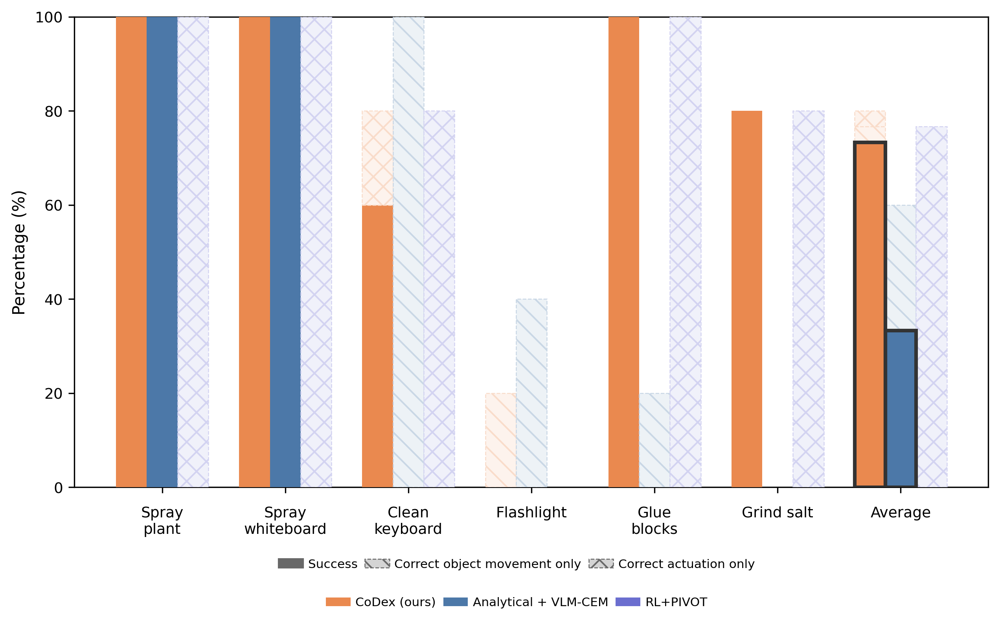

Anonymous
Why care? CoDex learns dexterous grasp–move–actuate skills for functional object manipulation (FOM) without any human demonstrations.
How we do it:
What CoDex achieves: 73% overall success across six real‑world CD‑FOM tasks, outperforming Analytical+VLM‑CEM (33%) and RL+PIVOT (0%).
"Robots can pick and place, but can they use a spray bottle or a glue‑gun?"
The challenge. CD‑FOM tasks demand coordinated control over internal (buttons, triggers) and external (object pose) DoF so the effect lands on the right target.
Our bridge. We let a VLM provide semantics (what to actuate, where to aim) and translate them into semantic constraints that drive analytic optimization and RL to achieve physical dexterity (functional contacts, stable grasps, collision‑free motion).
We parse (language, RGB‑D) to (i) segment and reconstruct the tool, (ii) locate the Actuation and Function points and directions, and (iii) derive a global goal pose via VLM‑CEM—an iterative, keypoint‑anchored pose search guided by VLM scoring.
Analytic constrained optimization turns local constraints into function‑aligned, stable grasp candidates; then constraint‑guided RL in ManiSkill3 refines them into a single motion primitive that completes grasp–move–actuate end‑to‑end.
The learned primitive transfers directly to a FRANKA arm with a LEAP hand, executing the full pipeline on unseen objects without task‑specific demonstrations or tuning.
Real‑world performance across six CD‑FOM tasks (5 trials each). The bottom row averages correspond to the overall success for each method.
| Task | CoDex (Ours) | Analytical + VLM‑CEM | RL+PIVOT |
|---|---|---|---|
| Spray whiteboard | 5/5 (100%) | 5/5 (100%) | 0/5 (0%) |
| Spray plant | 5/5 (100%) | 5/5 (100%) | 0/5 (0%) |
| Clean keyboard | 3/5 (60%) | 0/5 (0%) | 0/5 (0%) |
| Illuminate toy | 0/5 (0%) | 0/5 (0%) | 0/5 (0%) |
| Glue blocks | 5/5 (100%) | 0/5 (0%) | 0/5 (0%) |
| Grind salt | 4/5 (80%) | 0/5 (0%) | 0/5 (0%) |
| Average (Overall) | 22/30 (73%) | 10/30 (33%) | 0/30 (0%) |
CoDex reliably solves the two spray tasks and hot‑glue, with partial degradation on Clean keyboard and a full failure on Illuminate toy. Baselines mirror the composition plot: Analytical+VLM‑CEM succeeds only on the two sprays, and RL+PIVOT achieves no holistic success despite frequent correct actuations.
